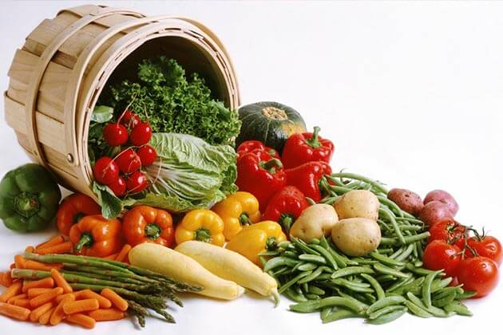
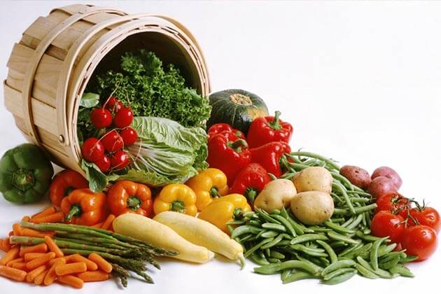
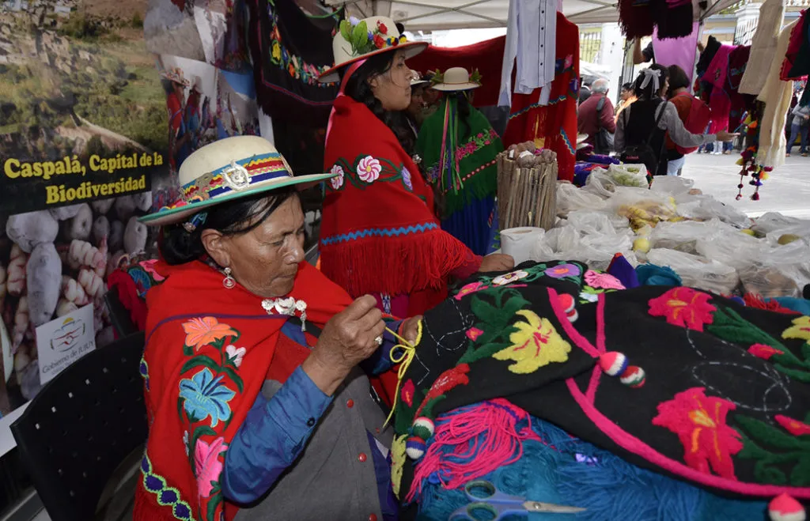
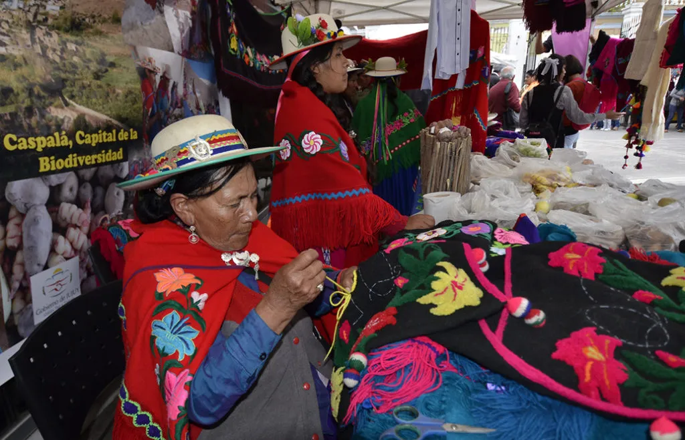
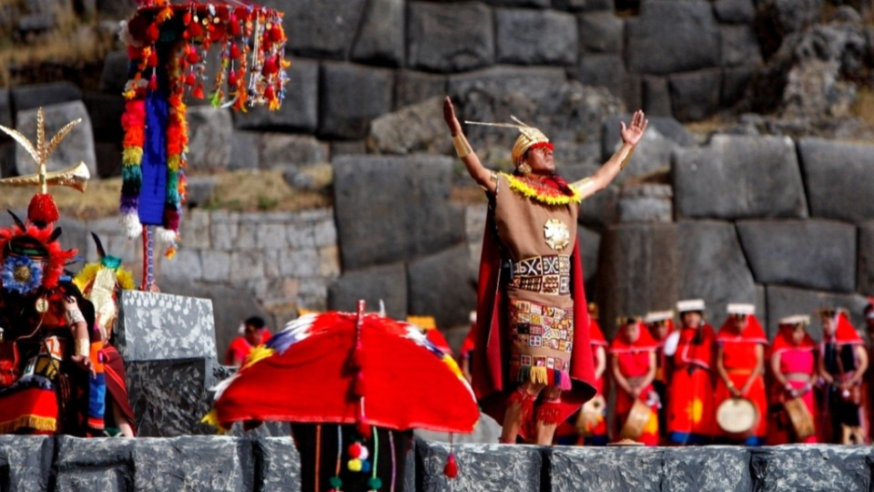
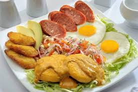
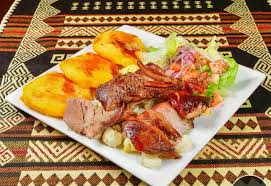
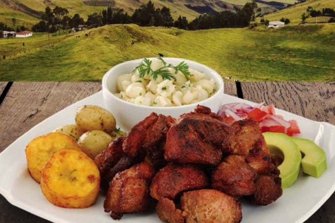
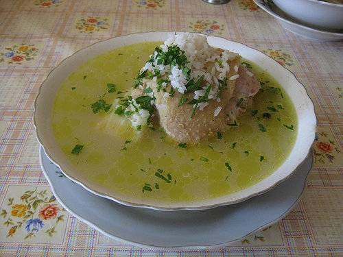

Sierra
La Sierra del Ecuador, también conocida como la región interandina, es una de las cuatro regiones geográficas del país (junto con la Costa, la Amazonía y la región Insular o Galápagos). Esta zona atraviesa el país de norte a sur y está compuesta por la cordillera de los Andes, lo que le da un relieve montañoso muy característico.


Geografia y hubicacion
Se extiende de norte a sur entre la cordillera Occidental y la cordillera Oriental de los Andes.En medio se encuentra una serie de valles y altiplanos conocidos como la Avenida de los Volcanes (término acuñado por el explorador Alexander von Humboldt) NAltitudes: varía desde los 1.800 hasta más de 6.000 metrossobre el nivel del mar (el Chimborazo, por ejemplo, es el punto más alto del Ecuador con 6.263 m.s.n.m. y el más cercano al espacio desde el centro de la Tierra)

Clima
Clima templado de montaña, aunque varía mucho con la altitud.En los valles interandinos, el clima suele ser templado y seco; en zonas altas puede haber páramos fríos y húmedos.Hay dos estaciones: lluviosa (octubre a mayo) y seca (junio a septiembre, aunque puede variar).
Sus temperaturas segun la zona donde se encuentre
- Temperado seco
- Temporado semihumedo
- Temperado humedo
- Frio humedo de alta montaña
- Glacial gelido


Economia
La economía de la región Sierra de Ecuador se basa en la agricultura, la ganadería y el turismo, con actividades industriales como la agroalimentaria (lácteos, embutidos) y la manufactura de artesanías (joyería, cerámica, muebles). También destaca la producción de flores para exportación y recursos mineros.
Agricultura
La agricultura en Ecuador es un pilar fundamental de su economía, con una gran diversidad de producción que se adapta a las distintas regiones geográficas del país. Aunque enfrenta desafíos, sigue siendo un motor para las exportaciones y la seguridad alimentaria
flores de exportación papa, maíz,cebada, hortalizas,

papa, maíz,cebada, hortalizas,

Ganadería
La ganadería en Ecuador es una actividad económica importante, aunque en gran parte de forma extensiva y con baja productividad, lo que genera problemas ambientales
vacas,

ovejas

alpacas.

Artesanías
La artesanía ecuatoriana es un reflejo de su rica diversidad cultural y geográfica, combinando técnicas ancestrales y materiales naturales. Cada pieza cuenta una historia y mantiene vivas las tradiciones de las comunidades indígenas y locales. Originalmente para el autoconsumo, hoy la producción se destina a la venta y exportación.
Textiles:
En la Sierra de Ecuador, los textiles tienen un profundo significado que va más allá de su función como vestimenta. Representan una manifestación cultural, un medio para preservar la historia y la identidad, y un vehículo para la cosmovisión y espiritualidad de los pueblos indígenas andinos
 

Cerámica
La cerámica en Ecuador posee una rica historia que se remonta a miles de años, desde las culturas precolombinas hasta la actualidad. A lo largo del tiempo, se ha convertido en una importante expresión cultural, económica y de identidad nacional, con estilos que varían según la región, incluyendo la Sierra, la Costa y la Amazonía.


Bordados:
El bordado es una manifestación artística y cultural de gran importancia en Ecuador, con una rica historia que se remonta a las civilizaciones precolombinas. Con la llegada de los españoles, se incorporaron nuevas técnicas y materiales, enriqueciendo aún más esta tradición. Hoy en día, los bordados no solo adornan prendas de vestir, sino que también son un medio para preservar la historia, la identidad y la cosmovisión de las comunidades indígenas, especialmente en la Sierra


Sombreros
El sombrero más emblemático y reconocido de Ecuador es el sombrero de paja toquilla, famoso mundialmente como "sombrero de Panamá". Este sombrero, cuyo tejido fue declarado Patrimonio Cultural Inmaterial de la Humanidad por la UNESCO en 2012, es una obra de artesanía de alta calidad, tejida a mano con la fibra de la palmera Carludovica palmata.

Turismo:
El turismo en la Sierra ecuatoriana destaca por una combinación de naturaleza andina, cultura ancestral e historia colonial. Atraviesa el país a través de la majestuosa Cordillera de los Andes, ofreciendo una gran diversidad de paisajes, desde volcanes y lagunas hasta valles fértiles y páramos.
-
Histórico:
La Sierra de Ecuador tiene una historia rica y compleja que se remonta a miles de años, desde las primeras culturas precolombinas hasta la actualidad. Esta región andina ha sido testigo de importantes desarrollos culturales, sociales y políticos que han moldeado la identidad del país. Grito de Independencia ,Gran Colombia , Batalla del Pichincha, Ncacimiento deEcuador

Cultural
La cultura de Ecuador es sumamente diversa y compleja, resultado de su herencia indígena, la influencia colonial española y la mezcla multiétnica de sus habitantes .

Ecológico y de Aventura.
La Sierra de Ecuador ofrece una combinación única de ecología y aventura, con paisajes andinos impresionantes, una rica biodiversidad y numerosas opciones de deportes extremos y ecoturismo.


Cultura y Tradicines
La cultura y tradiciones de la Sierra ecuatoriana se caracterizan por una fusión de raíces indígenas y herencia colonial, celebradas en festividades coloridas como la Diablada de Píllaro y la Mama Negra.
Festividades como
-
Inti Raymi (fiesta del sol, en junio)
El Inti Raymi en la sierra es una fiesta andina ancestral que celebra el solsticio de invierno, marcada por rituales, danzas y música en honor al dios Sol (Inti) y la gratitud por las cosechas.
La Mama Negra (Latacunga)
La Fiesta de la Mama Negra se celebra en Latacunga, en la Sierra ecuatoriana, y es un festival multicultural que fusiona tradiciones indígenas, españolas y africanas. Originalmente un homenaje a la Virgen de la Merced, se realiza dos veces al año: en septiembre por motivos religiosos y en noviembre conmemorando la independencia de la ciudad La celebración se caracteriza por coloridos desfiles con personajes como la Mama Negra, el Ángel de la Estrella y los Huacos, además de música folclórica y danzas.

Los carnavales andinos de la sierra de Ecuador combinan tradiciones indígenas y mestizas con celebraciones más contemporáneas. Lugares como Guaranda, famosa por su "Taita Carnaval" y el licor "pájaro azul", y Ambato, con su "Fiesta de las Flores y las Frutas", son emblemáticos. Otras comunidades celebran el Pawkar Raymi, una fiesta ancestral que agradece a la Pachamama por las cosechas, con desfiles y danzas. Las celebraciones incluyen juegos con agua y harina en algunas zonas, y desfiles con carros alegóricos y comparsas en otras.

Gastronomia de la Sierra
La Sierra del Ecuador tiene una gastronomía rica y variada, influenciada por la cultura indígena andina y la cocina mestiza. , y productos lácteos, además de una gran variedad de especias y hierbas.
Yapingachos
Tortillas de papa rellenas de queso, doradas en sartén. Acompañadas con chorizo, huevo frito, aguacate, curtido de cebolla y salsa de maní
Hornado
Cerdo horneado lentamente hasta quedar crujiente por fuera y suave por dentro. Se sirve con mote (maíz pelado), llapingacho, plátano maduro y ensalada.
Choclo con queso
Mazorca de maíz tierno cocido, servida con queso fresco y a veces con habas Muy común como refrigerio o comida ligera.

Fritada
Carne de cerdo cocinada en su propia grasa con ajo, cebolla y especias. Se sirve con mote, maduro frito, tortillas de papa y ensalada.
Caldo de gallina criolla
Sopa preparada con gallina de campo, papas, yuca, maíz y especias ,Plato muy nutritivo y popular en el desayuno o almuerzo.
Mote pillo
Motei refrito con huevo, cebolla y achiote.Tradicional en la provincia de Azuay (Cuenca y alrededores).